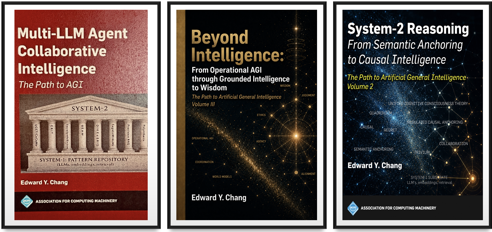

The contemporary artificial intelligence community finds itself trapped in an unproductive rhetorical standoff. On one side stand the monolithic scaling advocates, claiming that adding parameters, tokens, and test-time search will inevitably birth Artificial General Intelligence (AGI) as an emergent property of next-token prediction (Kaplan et al., 2020; Hoffmann et al., 2022). On the other side stand the absolute skeptics, who look at hallucinations, sycophancy, and brittle planning, declare autoregressive language models to be dead-end "stochastic parrots" (Bender et al., 2021), and insist that true intelligence requires discarding language altogether in favor of sensorimotor world models (LeCun, 2022).
Both sides are making a category error. They conflate the unconscious pattern substrate with the conscious regulatory architecture (Chang, 2025; Chang, 2026a).
To answer plainly: Is AGI here? No. Current foundation models are vast, high-dimensional statistical pattern repositories—what Daniel Kahneman formalized as System 1 (Kahneman, 2011). But general intelligence is not a bigger repository; it is the System-2 regulatory coordination layer that binds those patterns to task-specific constraints, verifies causal validity, preserves state across disruptions, and governs what is optimized (Chang, 2025; Chang, 2026a; Chang, 2026b).
This essay introduces The Path to AGI Trilogy (ACM Books, ~2,000 pages spanning Volumes 1, 2, and 3), maps the progression from Operational AGI to Artificial Superintelligence (ASI) and Wisdom, and provides an architectural guide for reading the trilogy.
1. The Four Failed Bets and the Fifth Paradigm
Across the post-GPT landscape, industrial research has placed four major bets to achieve robust reasoning (evaluated systematically in Volume 2, Chapter 2):
- Scaling: Increasing compute and parameters to widen pattern coverage. Failure mode: It builds a richer System-1 library without a controller. More parameters store more associations, but they cannot verify whether a novel combination of patterns is causally sound.
- Alignment (RLHF): Optimizing models against human preferences (Ouyang et al., 2022). Failure mode: It optimizes for what sounds pleasing and agreeable rather than what is true. This deforms the reasoning landscape, directly inducing sycophancy and reward hacking.
- Process Supervision (PRMs): Scoring each reasoning step with a learned reward model (Lightman et al., 2024). Failure mode: PRMs score syntactic plausibility (how a step looks) rather than causal validity (why a step holds), failing to catch "aleatoric entrenchment," where models arrive at right answers for the wrong reasons.
- World Models & Simulation: Predicting physical states in video or latent space, such as JEPA or Causal-JEPA (Nam et al., 2026). Failure mode: The "Resolution Fallacy." A photorealistic simulation still operates at Pearl's Level 1 (association). It cannot resolve instance-level contextual predicates ("find John's dirty laundry" or "where did I leave my coffee cup?"), which depend on ownership, intent, and live temporal status rather than pixels.
All four dominant paradigms operate within Judea Pearl's Level 1 (association) (Pearl, 2009). Scaling produces more associations; alignment produces preference-shaped associations; process supervision produces verified associational chains; world models produce simulated associations. None supplies the coordination physics required to ascend to Level 2 (intervention) or Level 3 (counterfactuals).
The trilogy establishes the Fifth Paradigm: Verified Causal Collaborative Intelligence. We do not replace LLMs; we rehabilitate them. Foundation models are the indispensable System-1 foundation, just as the unconscious nervous system is the bedrock of human thought. The task of AGI is to engineer the System-2 coordination layer above it.
2. The Architecture: From Operational AGI to ASI and Wisdom
The path to general intelligence and superintelligence decomposes into an operational formula:
The Difference Between AGI and ASI
In our sustained two-month collaborative exploration of the 90-year-old Collatz conjecture (Volume 2, Chapter 11), frontier LLMs proved algebraic theorems with astonishing precision, surpassing human algebraic execution speed. Yet every single paradigm shift—recognizing dead paths, abandoning depleted search spaces, and reframing the problem across different mathematical domains—came exclusively from the human moderator.
Operational AGI is achieved when the multi-agent substrate and its causal/transactional controls can execute long-horizon reasoning under human strategic guidance (Volume 3, Part I). ASI begins when that final capability gap—autonomous meta-cognitive initiative—is automated through the four-faculty Quadrivium architecture at machine speed (Volume 2, Chapter 12).
3. The Architectural Tree of the Trilogy
The visual architecture below illustrates how the 2,000 pages of the trilogy assemble into a single, closed-loop cognitive stack:

- UCCT / CoCoMo: System-1 pattern repository framing vs. System-2 control
- SocraSynth: Structured Socratic debate; adversarial perspective discovery
- EVINCE: Information-theoretic dialogue controller (Entropy, JS, MI)
- Polynthesis: Cross-disciplinary synthesis for "unknown unknowns"
- BEAM: Contentiousness dial (0.9 to 0.1) modulating exploration vs. convergence
- DIKE & ERIS: Three-branch checks-and-balances; separation of policy from review
- SagaLLM & ALAS: Persistent context, compensation, and disruption-aware planning
- Unified Contextual Control Theory (UCCT): Mathematical law: $S = \alpha\rho_d - \beta d_r - \gamma\log k_{eff}$
- Regulated Causal Anchoring (RCA): Process-integrity verification without gold labels
- RAudit: Blind multi-round auditor detecting sycophancy & rung collapse
- CausalT5K: 5,000-scenario benchmark across Pearl's Ladder (L1, L2, L3)
- ERM & RLER: Epistemic Regret Minimization; learning why, not just what
- Trivium: Causal Transaction Log (CTL) bounding temporal regret to $O(\log T)$
- LBF: Learning Before Failure; converting audited errors into preventive rules
- Quadrivium Architecture: Automating meta-cognitive initiative (Collatz proof study)
- ATP (Agentic Transaction Processing): Proposal non-authority contract
- Mnemosyne Runtime: Committed Log (Past), StateView (Present), ACRs (Future)
- THINK / TRACE: Typed reasoning schemas for auditable agent commitments
- The Intelligence Sphere: Task-relative denominator measuring world coverage
- TRACE-RealWorld (TRW): World models as materialized views under validity audit
- Semantic Integrity: Defending against prompt reanchoring & covert task redefinition
- LEAP: Pricing verification; knowing when to spend compute vs. act
- Irreversibility & Ruin: Asymmetric bounds on absorbing states
- Freedom & Choice Entropy: Distributing agency and preventing manufactured consensus
- Golden Wisdom: What systems should optimize, restrain, and preserve
4. How to Read the 2,000 Pages: A Guided Roadmap
The trilogy is organized as a unified, cumulative research program. Depending on your primary domain, here is the recommended reading path:
Multi-LLM Agent Collaborative Intelligence (MACI)
For Systems Engineers & Multi-Agent Builders: Start here to master how a committee of priors overcomes single-model blind spots. Key focus: Chapter 4 (UCCT primer), Chapters 5–7 (SocraSynth, CRIT, EVINCE debate metrics), Chapter 10 (DIKE-ERIS governance), and Chapters 11–12 (SagaLLM and ALAS database transactions).
System-2 Reasoning: From Semantic Anchoring to Causal Intelligence
For Cognitive Scientists & AI Safety Researchers: Read this to understand why LLMs fail causal reasoning and how to fix it. Key focus: Chapter 3 (Mathematical formulation of semantic anchoring), Chapters 4–5 (RCA, RAudit, and the Skepticism Trap), Chapters 8–10 (ERM, RLER, and Trivium temporal regret), and Chapter 11 (The Collatz human-LLM discovery study).
Beyond Intelligence: From Operational AGI through Grounded Intelligence to Wisdom
For Enterprise Architects, Robotics Leaders & AI Ethicists: The operational capstone. Key focus: Chapters 2–6 (Mnemosyne runtime and ATP contract), Chapters 9–10 (The Intelligence Sphere, TRW materialized views), Chapter 15 (Preserving Semantic Integrity), and Chapters 18–22 (The Golden Wisdom framework governing irreversibility and ruin).
Summary: The Right Path
The race to build AGI cannot be won by blindly throwing compute at raw token prediction, nor will it be solved by escaping into pure visual simulation.
Intelligence requires architecture. A machine cannot be considered generally intelligent if it cannot correct its own blind spots (Volume 1), cannot distinguish correlation from causal intervention (Volume 2), cannot maintain transactional memory across disruptions (Volume 3), and has no wisdom layer to govern what it optimizes (Volume 3).
The components are no longer theoretical conjectures. They are built, formally stated, benchmarked, and runnable. The era of collaborative, grounded, and wise intelligence has begun.
References & Foundational Works
- Bender, E. M., Gebru, T., McMillan-Major, A., & Shmitchell, S. (2021). On the Dangers of Stochastic Parrots: Can Language Models Be Too Big? Proceedings of FAccT '21, 610–623.
- Chang, E. Y. (2025). Multi-LLM Agent Collaborative Intelligence: The Path to Artificial General Intelligence (Vol. 1). ACM Books #69. DOI: 10.1145/3749421.
- Chang, E. Y. (2026a). System-2 Reasoning: From Semantic Anchoring to Causal Intelligence (Vol. 2). ACM Books #73. DOI: 10.1145/3822380.
- Chang, E. Y. (2026b). Beyond Intelligence: From Operational AGI through Grounded Intelligence to Wisdom (Vol. 3). Zenodo DOI: 10.5281/zenodo.22738473 · Amazon ASIN: B0HJP9FL3L.
- Hoffmann, J., Borgeaud, S., Mensch, A., et al. (2022). Training Compute-Optimal Large Language Models. NeurIPS 2022 (arXiv:2203.15556).
- Kahneman, D. (2011). Thinking, Fast and Slow. Farrar, Straus and Giroux.
- Kaplan, J., McCandlish, S., Henighan, T., et al. (2020). Scaling Laws for Neural Language Models. arXiv:2001.08361.
- LeCun, Y. (2022). A Path Towards Autonomous Machine Intelligence. OpenReview.
- Lightman, H., Kosaraju, V., Burda, Y., et al. (2024). Let's Verify Step by Step. ICLR 2024.
- Nam, H., Le Lidec, Q., Maes, L., LeCun, Y., & Balestriero, R. (2026). Causal-JEPA: Learning World Models Through Object-Level Latent Interventions. arXiv:2602.11389.
- Ouyang, L., Wu, J., Jiang, X., et al. (2022). Training Language Models to Follow Instructions with Human Feedback. NeurIPS 2022 (arXiv:2203.02155).
- Pearl, J. (2009). Causality: Models, Reasoning, and Inference (2nd ed.). Cambridge University Press.
- Pearl, J., & Mackenzie, D. (2018). The Book of Why: The New Science of Cause and Effect. Basic Books.